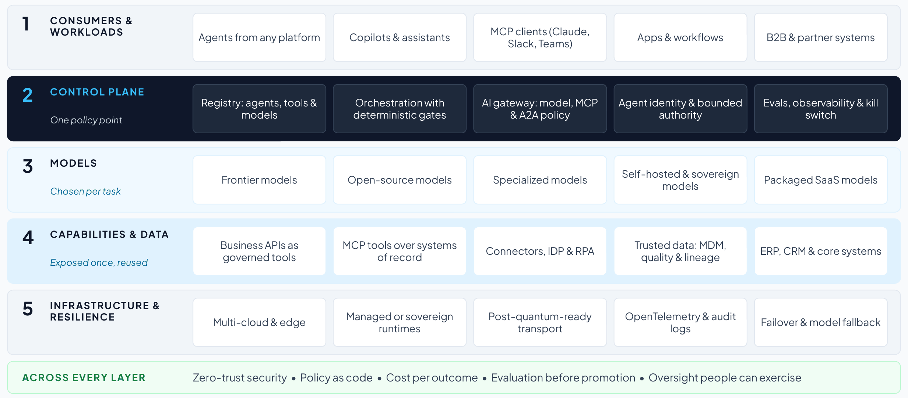
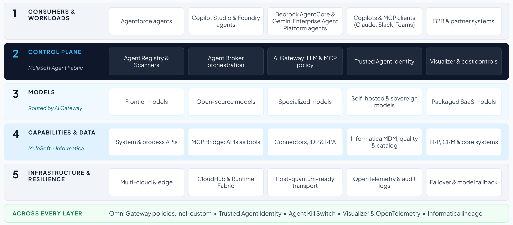

Section 5
Designing the north star and realizing it
Design in two passes. First draw the vendor-neutral north star for the use case: what good looks like, layer by layer, naming only the systems of record. Then show how MuleSoft Agent Fabric, MuleSoft and Informatica realize it, and what stays the client’s choice. Keeping the passes separate makes the recommendation credible: the client can see the design stands on its own before any product is named.

The north star has five layers and controls that run across all of them:
- Consumers and workloads: agents from any platform, copilots and MCP clients, applications and partner systems.
- Control plane: a registry of agents, tools and models with owners and risk tiers, and one gateway for model, MCP and A2A traffic. It also covers orchestration with deterministic gates, identity and delegated authority for agents, and evaluation, observability and a kill switch.
- Models: frontier, open-source, specialized, self-hosted and packaged SaaS models, chosen per task within cost, latency and regulatory limits.
- Capabilities and data: business capabilities exposed once as governed APIs and MCP tools, along with connectors and automation, and trusted data with master data, quality, lineage and a governed catalog.
- Infrastructure and resilience: multi-cloud and edge, managed or customer-operated runtimes, post-quantum-ready transport, observability and audit logs, and failover with model fallback.
- Across every layer: zero-trust security and governance, including policy as code, cost accountability, evaluation before promotion and human oversight people can exercise.
The design rule. No consumer calls a model or an enterprise capability directly: every agent-to-model and agent-to-tool call traverses the control plane, where identity, policy, routing, cost and audit are applied.
From the north star to the use-case architecture
- Fill each layer from the inventory. Users and channels, agents, orchestration, control plane, models, MCP servers and APIs, data governance and systems of record (template T7).
- Choose the orchestration pattern. Embedded agents inside each application, a dedicated orchestration tier, or hybrid/federated: central governance with distributed execution. Most large multi-vendor enterprises converge on hybrid/federated.
- Give every agent a tier and a mode. Read-only, drafts, proposes or gated writes. Only a few agents should ever write to a system of record.
- Decide models and routing. Which tasks go to a frontier model, a private small model or embeddings, and which data may go where.
- Put data governance on the critical path. Golden records, semantics, lineage and quality for the data the agents act on.
- Draw security and governance across every layer. Then check the design rule: every call passes the control plane.
Checking the design against review frameworks
Enterprise architects often review designs against a cloud provider’s framework. The north star answers the questions that the three most used for agents ask, which gives reviewers a common language. Run the design-review checklist in T7 with the framework the client already uses.
| Framework | What reviewers check | Where the design answers it |
|---|---|---|
| AWS Well-Architected Agentic AI Lens (June 2026)76 | The six Well-Architected pillars applied to agents: bounded autonomy, least-privilege tool access, tiered oversight matched to the risk and reversibility of each action, tracing of agent reasoning, and control of token costs |
|
| Microsoft Cloud Adoption Framework: govern and secure AI agents (June 2026)14 | Accountability, one registry, one identity per agent, consistent policy across platforms, cost tags and alerts, audit mode before enforcement, adversarial testing, trusted MCP and A2A integrations, and a plan to disable a misbehaving agent |
|
| Google Cloud’s 20 questions for the agentic enterprise (July 2026)47 | Build, scale, optimize and govern: agents’ data access aligned with their users’, shadow AI and agent sprawl, rules for how users, agents, data and tools interact, enforcement and visibility, protection against leakage and prompt injection, detecting failures, and one place to manage the lifecycle |
|
Telling a day in the life
A day in the life makes the architecture human (template T8). Choose one persona and a realistic case, and tell it in six to eight timestamped moments from the trigger to the end state. Make every human decision visible, include one moment where a control changes the outcome (for example, a person who is not cleared is replaced before anyone sees why), and end with the result in business terms.
Tracing how the components work together
Trace the same day through the architecture (template T9). For each moment, name the components and the protocol (A2A between agents, MCP from agents to tools, APIs to systems of record) and the controls that apply. Show a policy check before every write, and every point where a person decides.
Realizing it with MuleSoft Agent Fabric and Informatica
Map every reference component to the capability that realizes it (template T10). MuleSoft Agent Fabric is the control plane, with MuleSoft APIs, connectors and MCP Bridge as the capability layer and Informatica as the data foundation, exposed to agents through MCP servers that Agent Fabric can govern.21,77 The client keeps its choice of collaboration tools, models, agent frameworks and systems of record.

| Reference component | MuleSoft or Informatica capability |
|---|---|
| Registry | Agent Registry and Agent Scanners (MuleSoft Agent Fabric) |
| Orchestration | Agent Broker with guided determinism (MuleSoft Agent Fabric) |
| AI gateway | AI Gateway for LLM and MCP traffic, and Omni Gateway policies for APIs and A2A (MuleSoft) |
| Agent identity | Trusted Agent Identity with mobile approval (MuleSoft Agent Fabric) |
| Custom Omni Gateway policies built with the Policy Development Kit (Approval-to-Execution Binding; Cross-Session Aggregate-Risk Gate) |
| Operate and control | Agent Kill Switch, Agent Visualizer and AI cost controls for token-based rate limits and spend attribution (MuleSoft Agent Fabric) |
| MCP servers and APIs |
|
| Master data | Multidomain MDM (Informatica) |
| Semantics, catalog, lineage | Data Governance and Catalog, with the CDGC Metadata Search MCP server (Informatica) |
| Data quality | Data quality rules, with the Address Verification MCP server (Informatica) |
| Deployment | CloudHub or customer-managed Runtime Fabric (MuleSoft) |
Custom Omni Gateway policies, built with the Policy Development Kit, are not MuleSoft products: the client or partner owns their testing and support.78 Evaluation runs with any evaluation tool, with the results recorded in the registry (Section 4).
Coexisting with the hyperscalers’ agent control planes
Most clients will run more than one agent control plane. Microsoft describes Agent 365 as “the control-plane for AI agents,” with Microsoft Entra Agent ID for agent identities.12 AWS offers Amazon Bedrock AgentCore, whose services include a runtime, memory, a gateway that connects MCP servers, identity and observability.62 Google’s Gemini Enterprise Agent Platform includes an agent registry, an agent gateway and agent identities.47 With several planes in place, the design needs a division of labor, agreed with the enterprise architect and recorded in T10:
| Estate | Native agent control plane | Usually authoritative for | MuleSoft Agent Fabric’s role |
|---|---|---|---|
| Microsoft 365 and Azure | Agent 365 and Microsoft Entra Agent ID12 |
| Registers Copilot Studio and Foundry agents and applies common policy to their calls into enterprise systems |
| AWS | Amazon Bedrock AgentCore62 | Runtime, memory and identity for agents built on AWS | Registers Bedrock and AgentCore agents and governs their access to enterprise APIs and MCP tools |
| Google Cloud | Gemini Enterprise Agent Platform: Agent Registry, Agent Gateway, Agent Identity47 | Agents built on Google Cloud | Registers them and applies the same policy as for every other estate |
| Salesforce | Agentforce | Agents working in Salesforce data and processes | Registers and governs Agentforce agents |
| Across estates | No single native plane | Cross-vendor inventory, policy on every call into enterprise capabilities and data, cross-vendor orchestration, and cost and audit | The vendor-neutral control plane21 |
A workable default is for each native plane to stay authoritative for identity and runtime inside its own estate, and for MuleSoft Agent Fabric to be authoritative for the cross-estate inventory, for policy on every call into enterprise capabilities and data, for orchestration across vendors, and for cost and audit. Federate identities rather than duplicating them, agree which registry holds the record of ownership, and send every plane’s telemetry to one trace. Microsoft’s own guidance takes the same approach inside its estate and asks for consistent policy across every agent platform.14
What to check in any agent platform
- Scope of enforcement. Agent Fabric applies policy to agent traffic that flows through MuleSoft.21 Route every agent-to-model and agent-to-tool call through it, and plan endpoint and identity controls for anything that bypasses it.
- Complementary controls. Hyperscaler agent planes and identity services (such as Agent 365 and Microsoft Entra Agent ID, Amazon Bedrock AgentCore and Google’s Agent Identity), identity providers, security operations and existing data governance stay part of the stack, and the control plane federates them. Agree which is authoritative for what (above).
- Protocol versions. Confirm which MCP and A2A versions each gateway, registry and agent platform supports, and how each handles the 2026 changes: A2A 1.0 with signed agent cards, and the stateless MCP revision of July 2026.26,27
- Oversight you can exercise. Where included policies do not bind approvals to executed calls, plan and budget for custom policies built with the Policy Development Kit.
Standards and regulation dates
Protocol versions and regulation dates change from one edition to the next. The table keeps them in one place and matches the handbook’s table in Section 7 and the appendix slide in both decks. Check it before every readout, update it at each edition and note what changed. Since January 2026, for example, A2A reached version 1.0 and MCP became stateless.
| Standard or regulation | Version or date | Templates |
|---|---|---|
| A2A |
| T5, T9 |
| MCP | Specification revision 2026-07-28 (stateless)26 | T5, T9 |
| Agent Payments Protocol (AP2) | Contributed to the FIDO Alliance in April 2026 and still pre-standard28 | T5 |
| EU AI Act high-risk obligations | From December 2, 2027 (Annex III) and August 2, 2028 (Annex I)32 | T5 |
| US federal post-quantum deadlines |
| T5 |